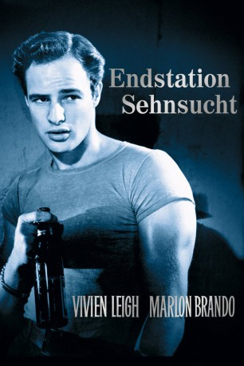

#4580 Endstation Sehnsucht
Alternativ: A Streetcar Named Desire
Auszeichnungen: 4 Oscars gewonnen für 8 Oscars nominiert 1 GoldenGlobes gewonnen 1 BAFTA-Awards gewonnen
 
 IMDB-Wertung: 8.0 / 10
IMDB-Wertung: 8.0 / 10  Metascore: 0
Metascore: 0 
Die kultivierte, aber labile Lehrerin Blanche sucht Unterschlupf bei ihrer Schwester Stella im schwülen New Orleans. Sie will ihre Vergangenheit vergessen. Als Blanche den schüchternen Mitch kennen lernt, träumt sie sogar von einem neuen gemeinsamen Leben mit ihm. Doch Stellas brutaler Ehemann Stanley Kowalski, ein polnischer Einwanderer, bedrängt Blanche zusehends, bis ihre Auseinandersetzungen schließlich in einer Katastrophe enden...
Jahr: 1951
Dauer: 124 Minuten
FSK: 12
Land: USA Studio: Warner Bros. PicturesTonspuren:
Untertitel: Deutsch,
Auflösung: 1080p (1488x1080) Größe: 8478 MB
Genre: Drama
Regisseur:  Elia Kazan
Elia Kazan
Drehbuch: Costa Botes
Soundtrack:
Darsteller:
- Vivien Leigh als Blanche
 Marlon Brando als Stanley
Marlon Brando als Stanley Kim Hunter als Stella
Kim Hunter als Stella Karl Malden als Mitch
Karl Malden als Mitch Richard Garrick als A Doctor
Richard Garrick als A Doctor John George als (uncredited
John George als (uncredited Rudy Bond als Steve
Rudy Bond als Steve- Nick Dennis als Pablo
- Peg Hillias als Eunice
- Wright King als A Collector
- Ann Dere als The Matron
- Edna Thomas als The Mexican Woman
- Mickey Kuhn als A Sailor
- Mel Archer als Foreman , uncredited
- Dahn Ben Amotz als Bit Part , uncredited
- Marietta Canty als Giggling Woman with Eunice , uncredited
- John Gonetos als Vendor , uncredited
- Chester Jones als Street Vendor , uncredited
- Lyle Latell als Policeman , uncredited
- Maxie Thrower als Passerby , uncredited
- Charles Wagenheim als Passerby , uncredited
- John B. Williams als Vendor , uncredited
Datei: X:\1950-1959\Endstation Sehnsucht (1951, FSK12, 1488x1080).mkv seit 18.10.2016
Festplatte: HD 1900-1970
 Es gibt insgesamt 141 Filme in der Gruppe '1950-1959'
Es gibt insgesamt 141 Filme in der Gruppe '1950-1959'